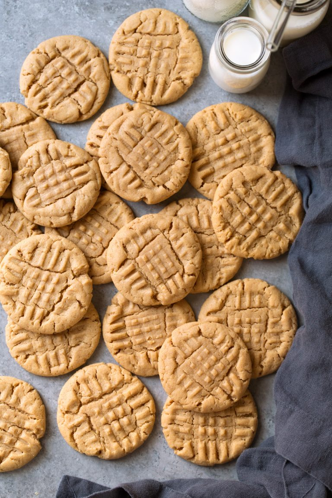

Peanut Butter Cookies

Description
Easy home-made peanut butter cookies
Ingredients
- 1 1/3 cup (188g) all purpose flour, scoop and level
- 3/4 tsp baking soda
- 1/2 tsp baking powder
- 1/4 tsp salt
- 1/2 cup (113g) unsalted butter, softened
- 1/2 cup (105g) granulated sugar
- 1/2 cup (110g) packed light brown sugar
- 3/4 cup (185g) creamy peanut butter
- 1 large egg
- 1 1/2 tsp vanilla extract
Instructions
- Preheat oven to 350F. Line two 18 x 13 baking sheets.
- In a mixing bowl whisk together flour, baking soda, baking powder, and salt.
- In the bowl of an electric stand mixer, cream together butter with granulated and brown sugar.
- Mix in peanut butter, then blend in egg and vanilla. With mixer on low, add in flour mixture slowly just until combined.
- Scoop dough and shape into balls (30g or about 1/8 cup). Place on baking sheet two inches apart.
- Using a long fork, press perpendicular hatch marks onto the cookies
- Bake for 9 minutes one sheet at a time.
- Let cool for 5 minutes then transfer onto cooling rack for further cooling.